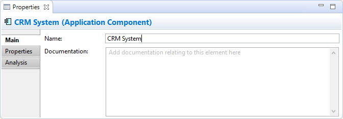
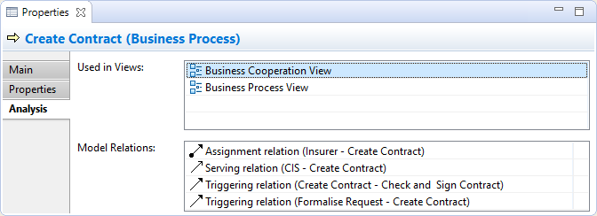

Selecting an ArchiMate Element in the Model Tree or in a View means that you can edit or view the following model properties in the Properties Window. See Element Appearance Properties for visual properties when the element is selected in a View.
The Main Tab
Main Properties for an ArchiMate Element
| Specialization: | Select the Specialization for this ArchiMate Element. The button to the right of the drop-down control will open the Specializations Manager. |
| Name: | The name of the ArchiMate Element. |
| Documentation: | A space to enter some documentation relating to this Element. |
 In the "Documentation" text control, URLs that start with "http://" "https://" or "ftp://" will show as a hyperlink. Holding the Ctrl / Command key will change the cursor to a "hand" cursor and you can open the link in a Browser.
In the "Documentation" text control, URLs that start with "http://" "https://" or "ftp://" will show as a hyperlink. Holding the Ctrl / Command key will change the cursor to a "hand" cursor and you can open the link in a Browser.
The Junction connector has an additional property for type:

The Junction Type property
| Type: | Can be set to "And" or "Or". Setting this also changes the element's icon. |
The Properties Tab
For more information about creating and managing User Properties see User Properties.
The Analysis Tab
Analysis for an ArchiMate Element
| Used in Views: | A table showing the Views (if any) where the element is used (displayed in a diagram). Double-clicking on an entry in the table will open the View and select the object in the diagram. |
| Model Relations: | A table showing the relationships (if any) to and from the element in the model. Double-clicking on an entry in the table will select the relationship in the Model Tree window if it is open. |